Manual de Biodont
Sistema de gestión para consultorio odontológico · Versión 1.0
La Parte 1 va por lo que usted hace en el día: llega un paciente, se le atiende, se le cobra. Cada guía se sigue de principio a fin, aunque pase por varias pantallas.
La Parte 2 es para consultar algo suelto: qué hace un botón, qué significa un estado, qué puede hacer cada rol.
Las capturas son del sistema real con datos de ejemplo. Los nombres de pacientes que verá aquí (María Rodríguez, Andrea Salazar) son ficticios.
Qué es Biodont
Biodont guarda la información clínica y administrativa del consultorio: los pacientes, sus citas, su historia clínica, el odontograma, los presupuestos y el dinero.
Tres cosas conviene saber desde el principio, porque explican por qué el sistema se comporta como se comporta:
- La información no sale del consultorio. Biodont se instala en el equipo del consultorio y los datos viven ahí. No se suben a internet.
- Lo clínico no se borra: se anula. La historia clínica es un documento con valor legal y hay que conservarla 15 años desde la última atención. Cuando algo se registra mal, se anula dejando constancia de quién lo anuló y por qué — no desaparece.
- Cada quien ve lo suyo. Recepción maneja la agenda y el dinero pero no ve el detalle clínico; el auxiliar registra lo que le corresponde pero no firma. No es desconfianza: es lo que exige la norma sobre historia clínica.
Entrar al sistema
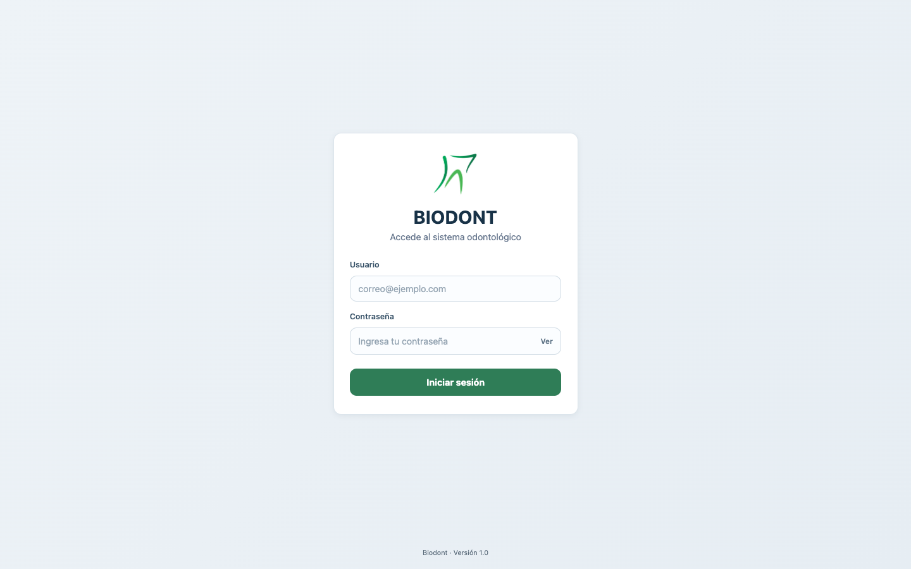
- Abra el navegador en la dirección que le indicó quien instaló el sistema (en el equipo del
consultorio suele ser
http://localhost:3000). - Escriba su correo y su contraseña. Si no está seguro de lo que escribió, pulse Ver para mostrar la contraseña.
- Pulse Iniciar sesión.
El sistema bloquea los intentos durante 15 minutos. El bloqueo es por equipo, no por persona: si alguien agota los cinco intentos en el computador del mostrador, los demás tampoco podrán entrar desde ese equipo hasta que pasen los 15 minutos.
Si pulsa Salir, se cierra su sesión en todos los dispositivos donde la tuviera abierta, no solo en ese equipo. Si trabaja con el computador y una tablet, tendrá que volver a entrar en las dos.
Puesta en marcha
Lo que hay que hacer una sola vez, el primer día, antes de atender pacientes.
Administración hace los pasos 1 a 4 · cada profesional hace el 5
- Cambie las contraseñas que trae el sistema. La instalación crea un usuario administrador con una contraseña conocida. Mientras no se cambie, cualquiera que sepa cuál es puede entrar. Se hace desde Mi perfil.
- Cree un usuario por persona. En Administración → Gestión de usuarios → Nuevo usuario. Cada persona con su propio usuario, nunca uno compartido: todo lo que se registra queda a nombre de quien lo hizo, y con un usuario compartido esa constancia no vale nada.
- Designe al responsable clínico. En la misma tabla, columna Responsable clínico, pulse Designar sobre el odontólogo que asume ese papel. Solo puede serlo un odontólogo. Es quien puede consultar el registro de accesos.
- Cargue los precios del tarifario. El sistema trae el catálogo de procedimientos oficial (códigos CUPS), pero sin precios: los precios los pone cada consultorio. Sin ellos, los presupuestos salen en cero. Se hace en Administración → Tarifario de procedimientos.
- Cada odontólogo define su PIN de firma. Sin PIN no se puede firmar nada. Vea cómo se hace más abajo.
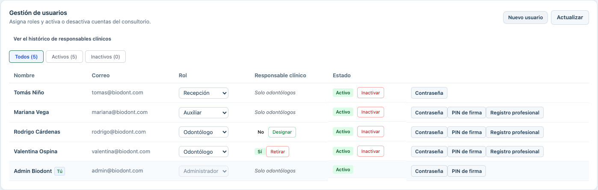
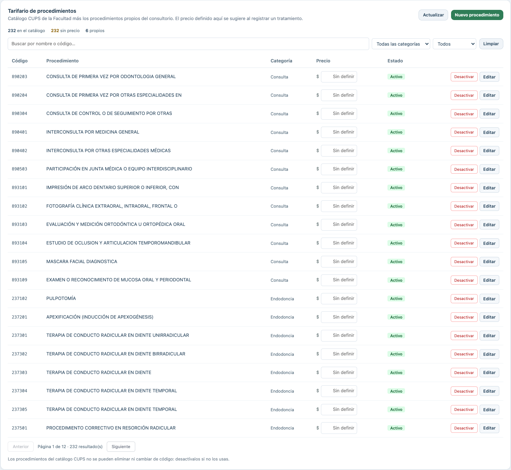
El PIN de firma
El PIN es la credencial del acto de firmar, y es distinto de la contraseña con la que entra al sistema. Son dos cosas separadas a propósito: si la contraseña sirviera para firmar, firmar y estar dentro del sistema serían lo mismo, y la firma no probaría nada.
- Administración entra a Administración → Gestión de usuarios y pulsa PIN de firma en la fila del profesional. El PIN que asigna es temporal.
- El profesional entra a Mi perfil y lo cambia por uno suyo. Necesita el PIN temporal para poder cambiarlo.
- Desde ese momento puede firmar.
Mientras el profesional no lo cambie, el sistema lo tiene por temporal y rechaza la firma. Es deliberado: si el PIN que puso Administración sirviera para firmar, Administración podría firmar en nombre del odontólogo.
El PIN tiene entre 6 y 12 dígitos. A los 5 intentos fallidos se bloquea, y hay que pedirle a Administración que lo restablezca.
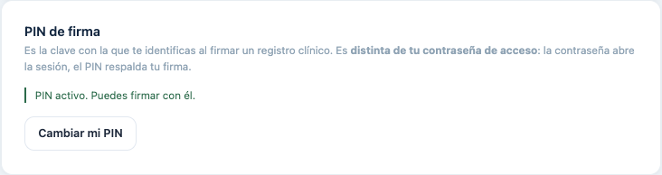
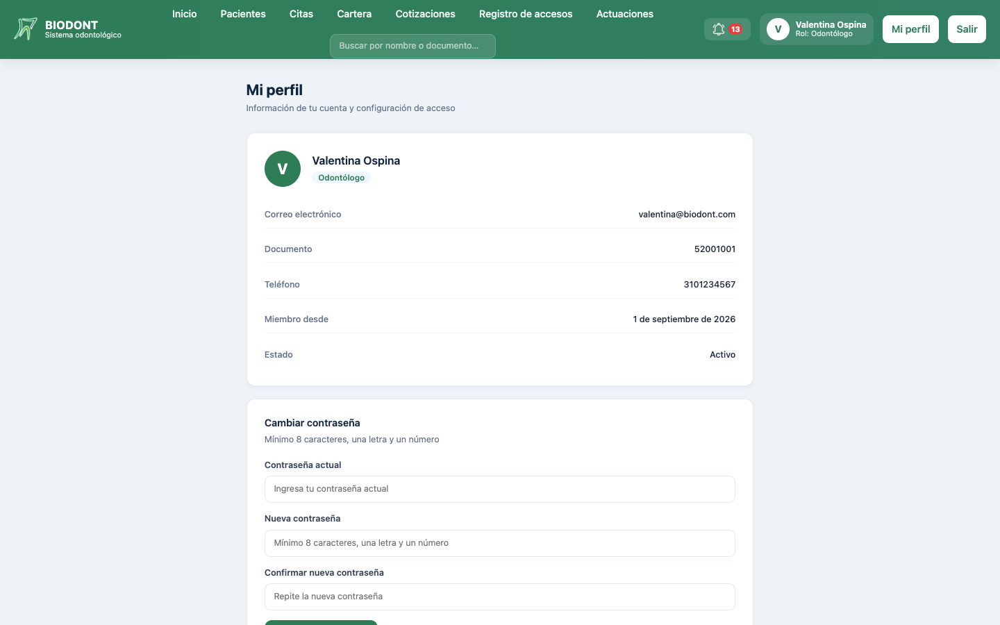
Llega un paciente nuevo
Recepción Auxiliar Odontólogo Administración
Antes de registrar a nadie, búsquelo: escriba su documento en el buscador de arriba. Si ya está, no lo cree otra vez — un paciente duplicado parte su historia en dos.
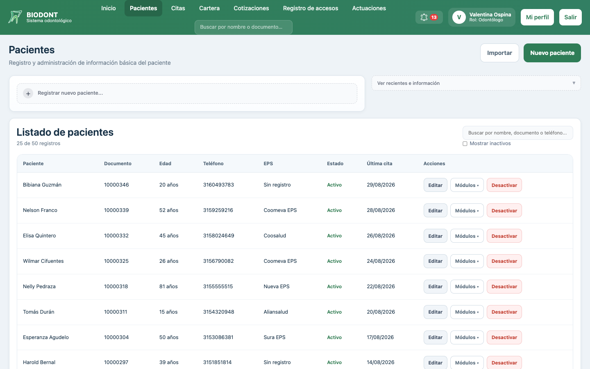
- Pulse Nuevo paciente.
- Llene los tres campos obligatorios, marcados con asterisco: Nombres, Apellidos y Documento.
- Ponga la Fecha de nacimiento. El sistema calcula la edad solo y la muestra debajo del campo — no hay que escribirla.
- Complete teléfono, correo, dirección y EPS si los tiene. Se pueden añadir después.
- Pulse Guardar paciente.
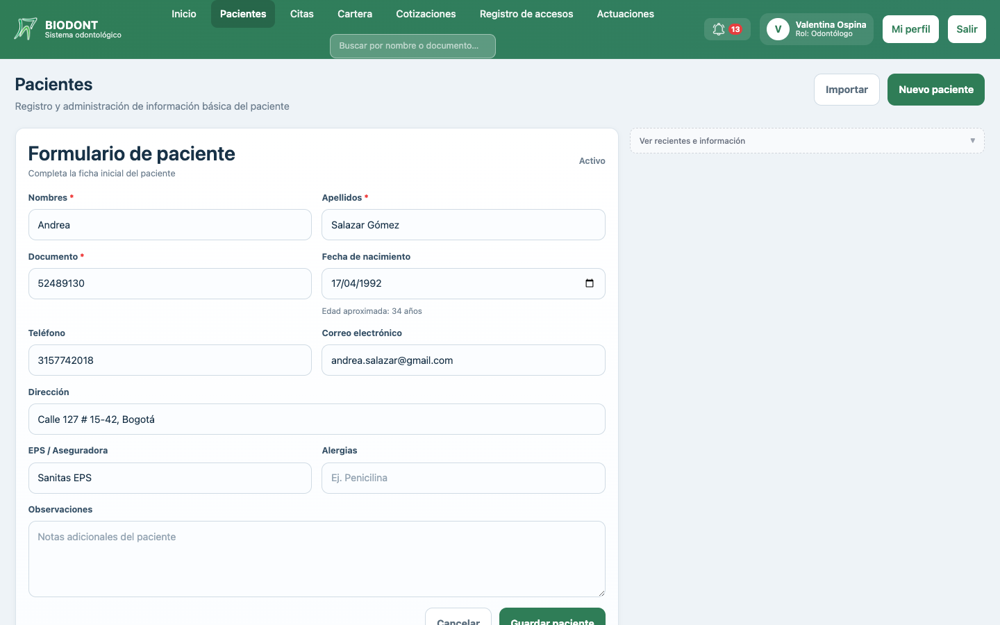
Es una nota rápida de recepción, texto libre. La alergia que hace saltar el aviso al diagnosticar y al recetar se registra en la historia clínica, con su agente y su reacción. Vea Registrar una alergia.
Escribir «Penicilina» aquí no alerta a nadie.
La Ley 1581 exige la autorización del paciente para tratar sus datos. Conviene recogerla en la admisión, el mismo día. Vea Documentos que firma el paciente.
Agendar y reprogramar una cita
Recepción Auxiliar Odontólogo Administración
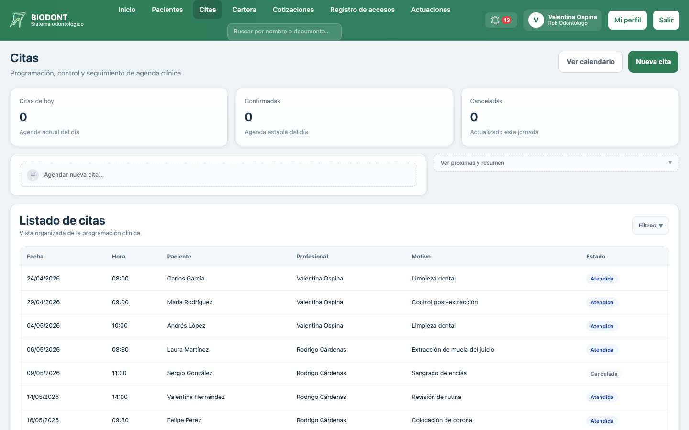
Agendar
- Entre a Citas y pulse el botón de nueva cita.
- Elija el paciente, el profesional, la fecha y la hora.
- Elija el tipo de atención: Valoración, Limpieza, Control o Urgencia. Son los cuatro valores que admite el sistema.
- Escriba el motivo — es lo que verá el profesional al abrir su agenda.
- Guarde.
Si el paciente ya tiene otra cita a menos de 30 minutos de esa hora, el sistema no la deja guardar y lo dice. Lo mismo si el profesional ya está ocupado en esa franja.
Reprogramar
No hay que cancelar y volver a crear: la cita se mueve y conserva su historia.
- Busque la cita en la agenda y pulse Reprogramar.
- Indique la nueva fecha y hora y el motivo del cambio.
- Guarde. El sistema vuelve a comprobar que no choque con otra cita.
Una cita Atendida es un hecho ya ocurrido y moverla cambiaría cuándo se atendió al paciente. Una Cancelada se vuelve a agendar, que es otra decisión. Solo se reprograman las que están Programada o Confirmada, y siempre a una fecha futura.
Abrir y llenar la historia clínica
Odontólogo llena y guarda · Auxiliar puede leerla · Administración la ve sin el detalle clínico
La historia clínica es una sola por paciente y se va completando con el tiempo. No se crea una nueva en cada visita: lo que se registra por visita es la atención.
- Abra el paciente y pulse la pestaña Historia clínica.
- Use el menú Secciones de la izquierda para saltar entre los bloques del formulario en vez de bajar con la rueda.
- Llene lo que corresponda y pulse Guardar historia.
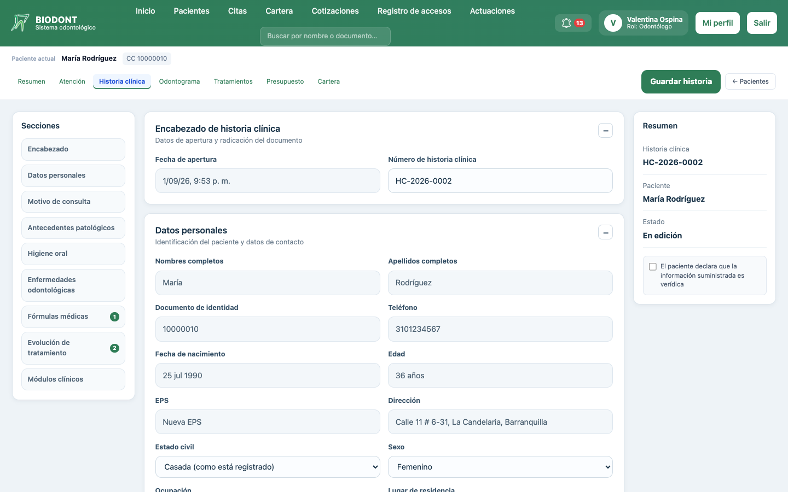
Pulse Guardar historia con el formulario cargado como está. La pantalla envía todo el formulario cada vez, así que guardar es seguro; pero no intente guardar «solo un campo» por otros medios.
El sistema conserva qué antecedentes conocía el profesional en cada momento. Por eso una atención firmada hace meses sigue mostrando los antecedentes de entonces y no los de hoy: así debe ser en un documento clínico.
Registrar una alergia
Odontólogo Auxiliar
Esta es la vía que hace saltar el aviso al diagnosticar y al recetar. Está dentro de la historia clínica, en Antecedentes patológicos → 4. Alergias.
En un paciente recién registrado todavía no hay historia abierta, y sin ella no se puede registrar ninguna alergia. La sección avisa entonces «Este paciente aún no tiene historia clínica abierta. Guarda la historia y luego podrás registrar sus alergias.» — no es una avería, es un paso pendiente.
Solución: abra la historia clínica del paciente y pulse Guardar historia una vez. Con eso queda abierta y las alergias ya se pueden registrar. Medido: antes de guardar avisa; después, funciona a la primera.
- En ¿El paciente presenta alergias conocidas? elija la respuesta. Las cuatro opciones
significan cosas distintas y conviene no confundirlas:
- Sin diligenciar — nadie ha preguntado todavía. Es lo que trae por defecto.
- Sí — el paciente refiere alergias. Regístrelas una a una.
- No — se preguntó y no tiene. No es lo mismo que «sin diligenciar».
- No sabe — se preguntó y el paciente no sabe.
- Pulse + Registrar alergia.
- Indique el agente (a qué es alérgico: penicilina, látex…), la categoría y la reacción que le produce.
- Guarde.
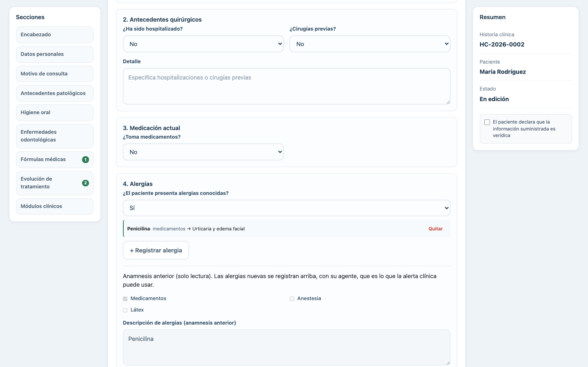
La alerta se construye con el agente. Escribir «es alérgica a varios antibióticos» en un campo de texto no produce ninguna alerta; registrar Penicilina como agente, sí.
Una vez registrada, la alergia aparece en el odontograma (panel «Condiciones del paciente»), en la atención y en la propia historia clínica.
Atender y firmar la atención
Odontólogo crea, revisa, firma y cierra · Auxiliar registra contenido, no firma ni cierra
La atención es lo que ocurre en una visita. La historia clínica es una sola y permanente; la atención es una por visita y no se sobrescribe nunca.
Registrar la atención
- Abra el paciente y entre a la pestaña Atención.
- Pulse + Nueva y escriba el motivo de consulta.
- Complete la enfermedad actual si aplica.
- En Diagnóstico, pulse + Añadir. Escriba la descripción y el código CIE-10 si lo tiene. Solo puede haber un diagnóstico principal; los demás se registran como relacionados.
- Añada los signos vitales si los tomó.
- Revise los antecedentes: aparecen resumidos, en solo lectura. Se editan en la historia clínica, no aquí. Pulse Actualizar revisión para dejar constancia de que los miró en esta visita.
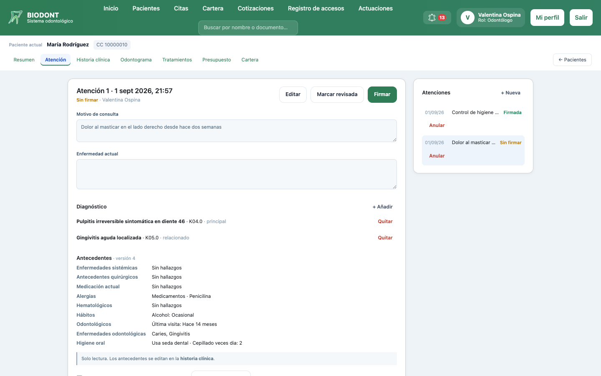
Firmar
Firmar cierra el contenido: a partir de ahí no se puede editar, y el sistema guarda una huella que permite comprobar después que nadie lo alteró.
- Pulse Marcar revisada cuando el contenido esté completo.
- Pulse Firmar.
- Escriba su PIN de firma — no su contraseña — y confirme.
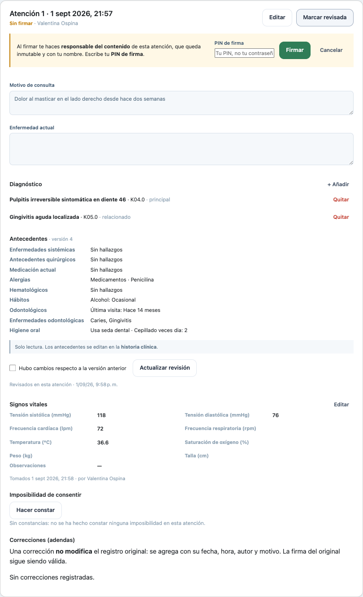
Después de firmar
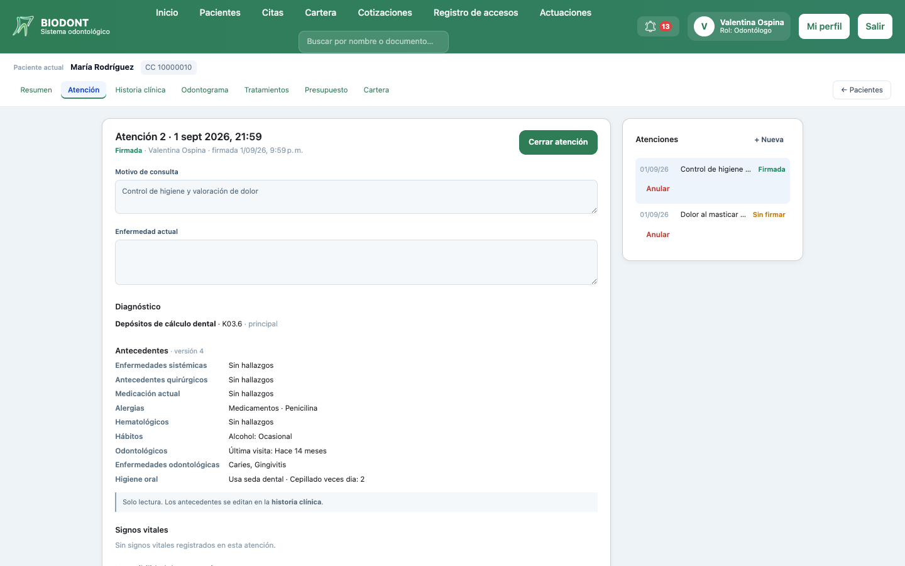
| Botón | Para qué sirve |
|---|---|
| Cerrar atención | Da la visita por terminada. Es el último paso del ciclo. |
| Agregar corrección | Añade una adenda. Lo firmado no se toca: la corrección se suma después, fechada y firmada, como manda la norma para un documento clínico. |
| Comprobar integridad | Verifica que el contenido firmado no ha sido alterado. Si algo cambió por fuera del sistema, lo dice. |
| Anular | Deja la atención sin efecto dejando constancia de quién la anuló y por qué. No la borra. |
Nunca se reescribe lo firmado. Si lo firmado pudiera cambiarse, la firma no probaría nada — y es justo lo que le da valor legal al documento.
Marcar el odontograma
Odontólogo Auxiliar
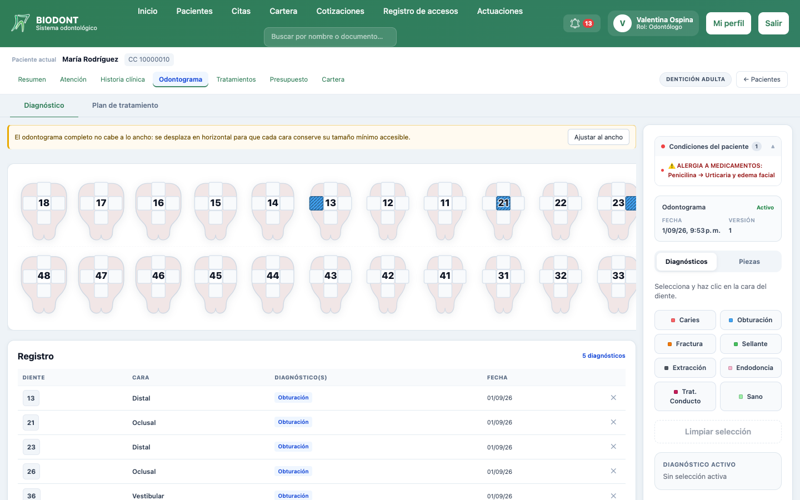
- Abra el paciente y entre a Odontograma.
- Elija el diagnóstico en la paleta de la derecha (Caries, Obturación, Fractura, Sellante, Extracción, Endodoncia, Trat. Conducto, Sano).
- Haga clic en la cara del diente que corresponda. Lo marcado aparece abajo, en Registro, con el diente, la cara y la fecha.
- Para quitar algo, pulse la ✕ de su fila en el registro.
Las dos pestañas
| Pestaña | Qué es |
|---|---|
| Diagnóstico | Lo que el paciente tiene hoy. Es el estado de la boca. |
| Plan de tratamiento | Lo que se va a hacer. Va aparte a propósito: la norma exige que el registro de lo encontrado y el plan no se confundan. |
Aparece un aviso arriba y el odontograma se desplaza en horizontal, para que cada cara conserve un tamaño en el que se pueda pulsar. El botón Ajustar al ancho lo encoge para verlo completo.
Arriba a la derecha se indica si el odontograma es de dentición adulta, mixta o pediátrica. Elíjala antes de empezar a marcar.
Cotizar a quien todavía no es paciente
Recepción Odontólogo Administración — el auxiliar no entra aquí
Alguien llama o entra a preguntar cuánto cuesta un blanqueamiento. Todavía no es paciente y puede que nunca lo sea. Para eso están las cotizaciones: dan un precio por escrito sin abrirle historia clínica a quien solo preguntó.
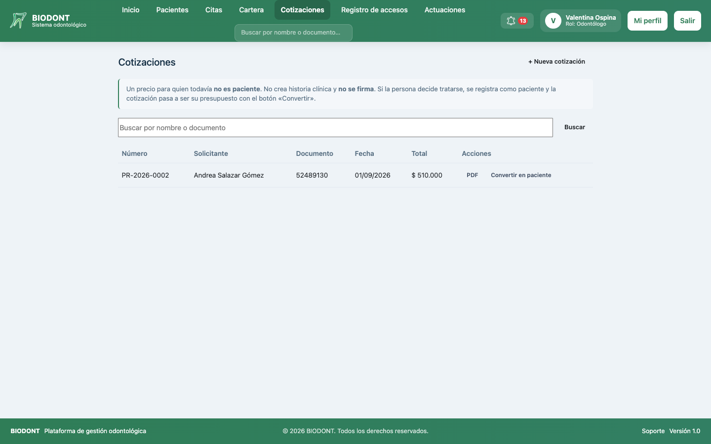
- Entre a Cotizaciones y pulse + Nueva cotización.
- Escriba el nombre de quien pregunta. Es lo único obligatorio. Documento, edad y teléfono son opcionales.
- Añada los procedimientos con su cantidad y su valor.
- Ponga la fecha de validez hasta la que respeta ese precio.
- Guarde y entréguele el PDF.
Cuando la persona decide tratarse
- Regístrela primero como paciente (Llega un paciente nuevo).
- Vuelva a Cotizaciones y pulse Convertir en paciente en su fila.
- Búsquela por nombre o documento y pulse Elegir.
La cotización pasa a ser el presupuesto de ese paciente, con sus mismos procedimientos y precios, y desaparece del listado de cotizaciones.
El buscador de conversión muestra 10 resultados. Si hay más coincidencias, lo avisa («Se muestran 10 de N»); afine por documento, que es único, para dar con el suyo.
La cotización caduca a los 180 días de creada, y por eso la fecha de validez no se puede poner más allá de ese plazo ni en el pasado: el sistema no deja prometer una vigencia que luego no respeta. A los seis meses la anula por su cuenta.
Presupuesto y aceptación
Odontólogo Recepción Administración — el auxiliar no entra aquí
El presupuesto es lo que se le propone a un paciente ya registrado, procedimiento por procedimiento.
- Abra el paciente y entre a Presupuesto.
- Pulse Nuevo presupuesto.
- Añada cada procedimiento. Al elegirlo del catálogo, el sistema rellena la descripción y el precio; puede cambiarlos a mano.
- Indique el diente cuando aplique, la fecha de validez y las notas que quiera que el paciente lea.
- Guarde y pulse Descargar PDF para entregárselo.
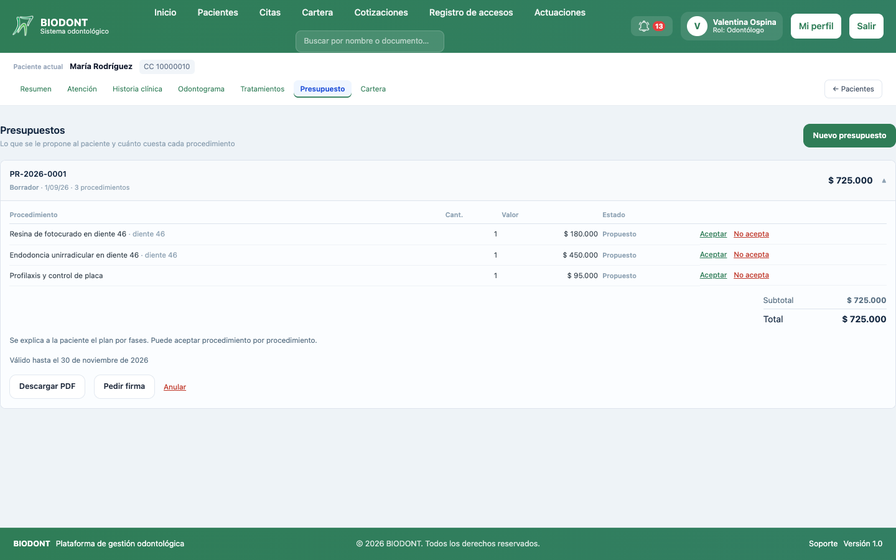
Aceptar procedimiento por procedimiento
El paciente casi nunca acepta el plan entero de una vez. Por eso cada línea tiene Aceptar y No acepta.
Al pulsar Aceptar, el sistema crea el tratamiento correspondiente con ese monto, y aparece en la pestaña Tratamientos del paciente. No hay que volver a escribir el valor.
Medido: aceptar una línea de $180.000 crea el tratamiento, y la Cartera del paciente sigue en cero. El cobro es un acto distinto — se registra en Cartera y se vincula a ese tratamiento. Es entonces cuando el sistema sabe cuánto se ha cobrado de él y cuánto falta.
Si un procedimiento sale en $0, es que ese código todavía no tiene precio en el tarifario. Se carga desde Administración → Tarifario de procedimientos.
Cobrar y cerrar la caja
Recepción Administración Odontólogo Auxiliar
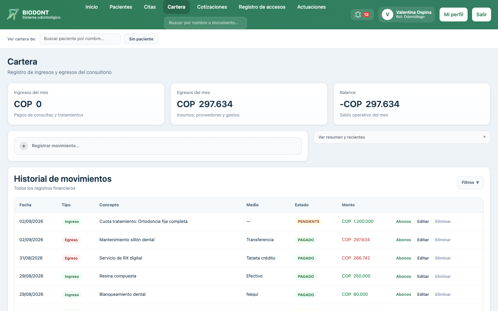
Registrar un cobro
- Entre a Cartera.
- Cree un movimiento de tipo Ingreso, con su valor y su concepto.
- Si corresponde a un tratamiento del paciente, vincúlelo: así el sistema sabe cuánto se ha cobrado de ese tratamiento y cuánto falta.
- Guarde.
Pagos parciales (abonos)
Si el paciente paga a cuotas, el movimiento se deja Pendiente y se le registran abonos. El movimiento pasa a Pagado solo cuando la suma de los abonos cubre el total.
En la cartera, Recepción ve el monto, el estado y el concepto administrativo, pero no la descripción clínica del tratamiento. No es un error de la pantalla: es la separación entre lo administrativo y lo clínico.
Cerrar el día
El resumen de Inicio muestra los ingresos del día. Cuenta el dinero que efectivamente entró hoy — los abonos incluidos —, no lo que se facturó.
Documentos que firma el paciente
Los cuatro roles abren esta pantalla, pero cada uno puede hacer cosas distintas
Son cuatro y están todos en la misma pantalla: abra el paciente y entre a Documentos.
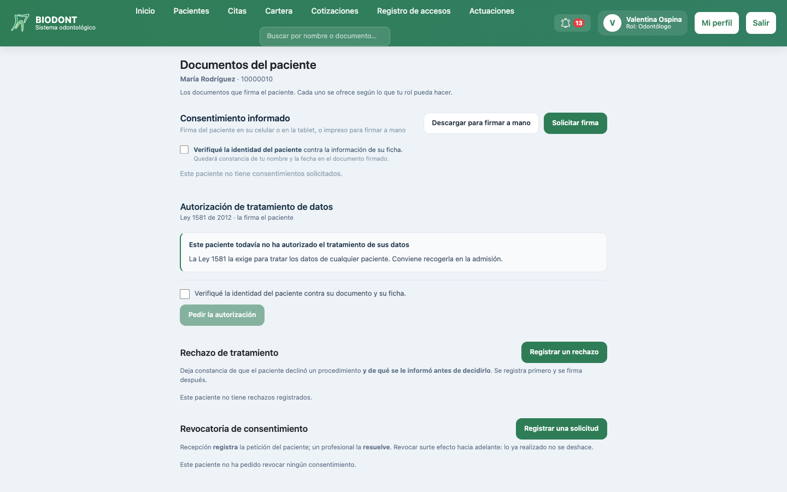
| Documento | Cuándo se usa | Quién lo emite |
|---|---|---|
| Consentimiento informado | Antes de un procedimiento, dejando constancia de que se le explicaron riesgos y alternativas. | Odontólogo |
| Autorización de tratamiento de datos | Para poder tratar sus datos personales (Ley 1581). Conviene recogerla en la admisión, con cualquier paciente. | Odontólogo y Recepción |
| Rechazo de tratamiento | El paciente declina un procedimiento. Se registra primero de qué se le informó y se firma después. | Solo el odontólogo |
| Revocatoria de consentimiento | El paciente retira un consentimiento que ya había dado. | Recepción registra la petición; solo un odontólogo la resuelve |
Recepción puede dejar constancia de que el paciente pidió revocar un consentimiento — es quien está en el mostrador cuando lo pide —, pero la decisión clínica de qué implica esa revocatoria la toma un profesional. Por eso a Recepción no se le ofrece el botón de resolver.
Cómo se firma
- Marque la casilla Verifiqué la identidad del paciente. Quedará constancia de su nombre y la fecha en el documento firmado.
- Pulse Solicitar firma.
- Aparece un código QR. Páseselo al paciente para que lo escanee con su celular, o abra el enlace en la tablet del consultorio.
- El paciente lee el documento, marca la casilla, escribe su nombre y su documento, firma con el dedo y confirma.
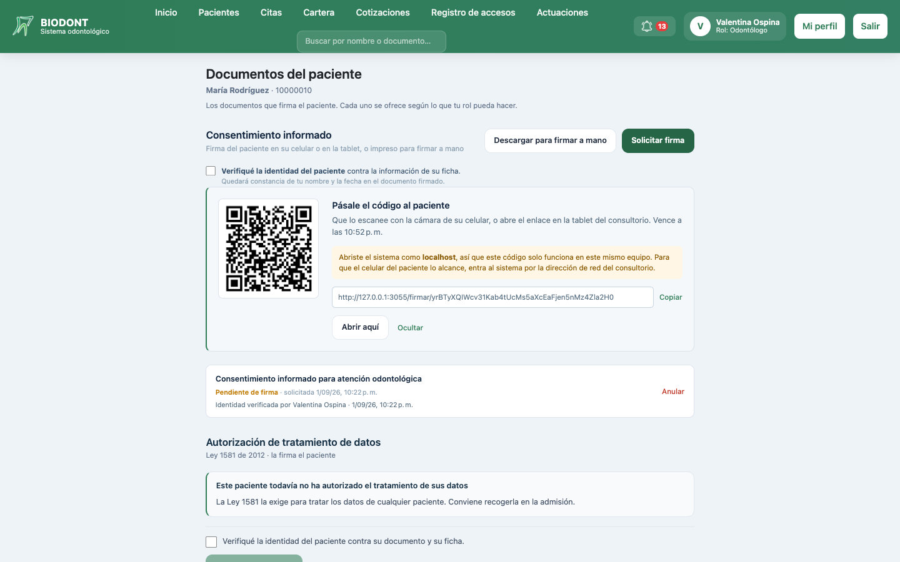
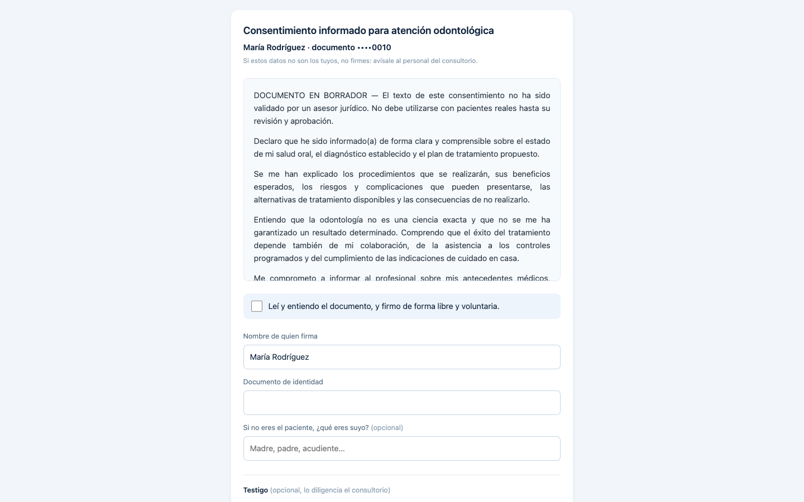
Cuando el sistema se abre como localhost, el enlace del código solo sirve en
ese mismo equipo: el celular del paciente no sabe llegar. El propio sistema lo advierte
debajo del código. Para que funcione desde otros dispositivos hay que abrir Biodont por la
dirección de red del consultorio, no por localhost.
Alternativa siempre disponible: Descargar para firmar a mano.
Mientras el consultorio no cargue su propio texto de consentimiento, revisado por su asesor jurídico, el documento lleva un aviso de borrador dentro de lo que firma el paciente. Es intencional: así nadie puede sostener después que firmó un texto aprobado. El texto se carga en Administración → Consentimiento informado.
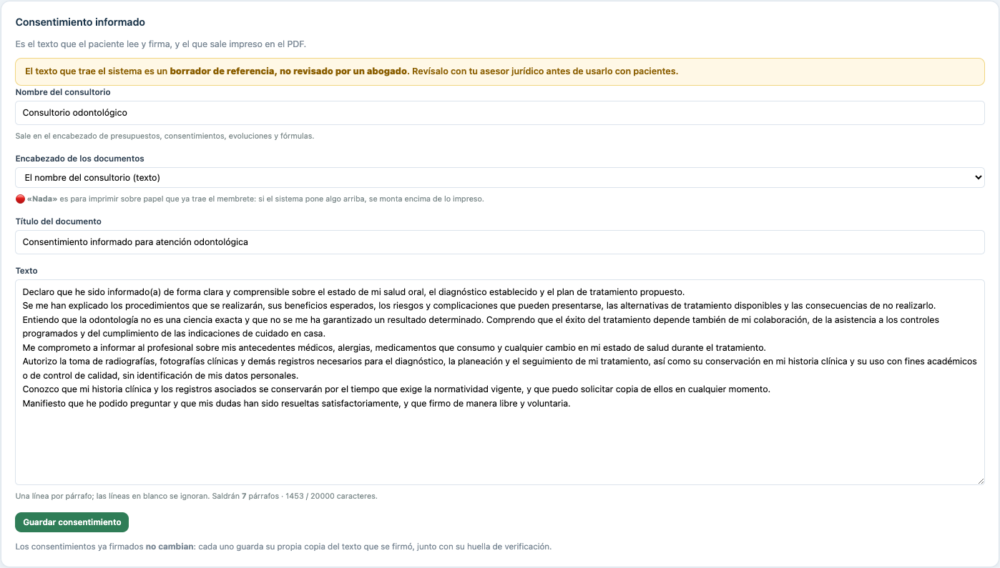
Ver quién entró a qué
Odontólogo responsable clínico — nadie más
La historia clínica es información reservada, y la norma exige poder saber quién la consultó. El Registro de accesos guarda quién entró, a qué, cuándo — y también quién lo intentó y no pudo.
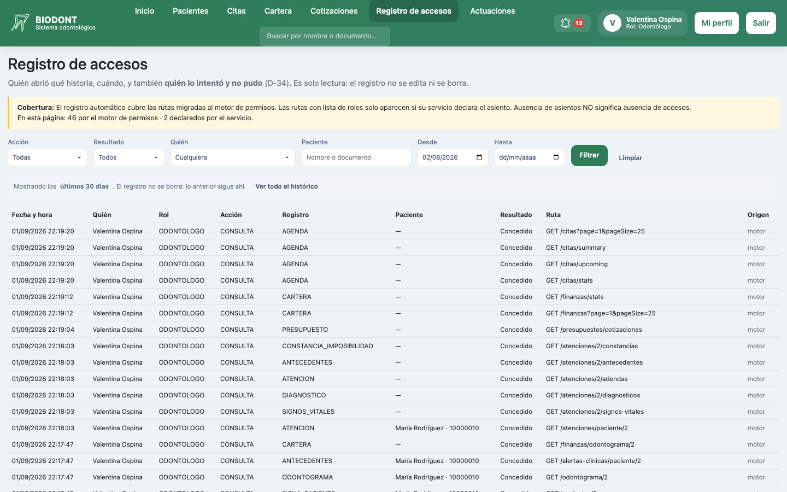
Se filtra por acción (consulta, creación, modificación, firma, anulación…), por resultado (concedidos o solo denegados), por persona y por fechas.
La pantalla dice que la ausencia de asientos no significa ausencia de accesos: el registro automático cubre las rutas que pasan por el motor de permisos. Léalo como una fuente parcial, no como la lista completa de todo lo que ocurrió.
Respaldar la información
Administración
Toda la información del consultorio vive en el equipo donde está instalado Biodont. Si ese disco falla y no hay respaldo, se pierde la historia clínica de todos los pacientes.
- Entre a Administración → Backup de base de datos.
- Pulse el botón de respaldo. Se descarga un archivo comprimido con la base de datos y los documentos subidos.
- Guárdelo fuera del equipo: disco externo, o el sitio que el consultorio haya definido.
Conviene probar una restauración de vez en cuando en un equipo aparte. Un archivo que no se ha comprobado puede estar incompleto y solo se descubre el día que hace falta.
Y si el disco externo vive permanentemente conectado, un ransomware alcanzaría también las copias. Conviene tener al menos una copia desconectada.
Durante una restauración el sistema entero deja de responder a propósito, y vuelve cuando termina. No la haga con pacientes esperando.
Parte 2 · Referencia
Pantalla por pantalla
Inicio
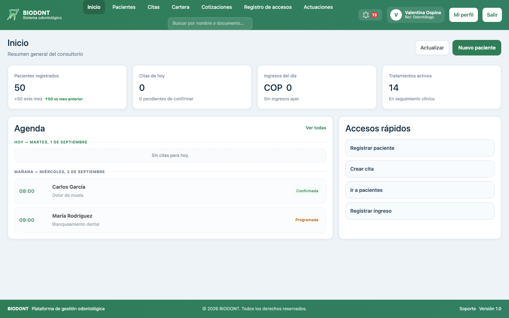
| Elemento | Qué muestra |
|---|---|
| Pacientes registrados | Total de pacientes activos, y cuántos se registraron este mes. |
| Citas de hoy | Las de la fecha de hoy y cuántas están sin confirmar. |
| Ingresos del día | Dinero que entró hoy, abonos incluidos. No es lo facturado. |
| Tratamientos activos | Los que están en seguimiento clínico. |
| Agenda | Las citas de hoy y de mañana, con su estado. |
| Accesos rápidos | Atajos a lo que más se usa. |
Las pestañas del paciente
Al abrir un paciente aparece una barra con sus módulos. Cuáles se ven depende de su rol.
| Pestaña | Para qué |
|---|---|
| Resumen | Vista rápida: higiene oral, documentos e historial de odontogramas. |
| Atención | Las visitas: crear, diagnosticar, firmar, cerrar. |
| Historia clínica | El documento permanente: datos, antecedentes, alergias, hábitos. |
| Odontograma | Estado de la boca y plan de tratamiento. |
| Tratamientos | Lo que se está haciendo y cuánto se ha cobrado de cada cosa. |
| Presupuesto | Lo propuesto y qué aceptó el paciente. |
| Cartera | Sus movimientos y su saldo. |
El bloque de alertas del Resumen lee el mismo registro de alergias que el odontograma, la atención y la historia clínica. Una alergia registrada hoy con su agente aparece también aquí como alerta crítica. Las cuatro pantallas coinciden.
Qué puede hacer cada rol
| Odontólogo | Auxiliar | Recepción | Administración | |
|---|---|---|---|---|
| Agenda y citas | Sí | Sí | Sí | Sí |
| Ficha del paciente | Sí | Sí | Sí, sin campos clínicos | Sí, sin campos clínicos |
| Historia clínica | Ver y editar | Ver | No | Ver sin el detalle clínico |
| Atención: crear y editar | Sí | Sí | No | No |
| Atención: firmar y cerrar | Sí | No | No | No |
| Odontograma | Sí | Sí | No | No |
| Evoluciones de tratamiento | Sí | Sí | No | No |
| Fórmulas médicas | Sí, solo él | No | No | No |
| Documentos e imágenes del paciente | Sí | Sí | No | No |
| Tratamientos | Sí | Sí | No | Sí |
| Presupuestos | Sí | No | Sí | Sí |
| Cotizaciones | Sí | No | Sí | Sí |
| Cartera y abonos | Sí | Sí | Sí, sin detalle clínico | Sí, sin detalle clínico |
| Tarifario | Solo leer | Solo leer | Solo leer | Crear y poner precios |
| Usuarios, respaldo, textos | No | No | No | Sí |
| Registro de accesos | Solo el responsable clínico | No | No | No |
Administración gestiona el sistema, no atiende pacientes. Ve la agenda, la ficha, la cartera y los presupuestos, pero no las fórmulas, ni las evoluciones, ni los documentos clínicos. Si Administración necesita ese contenido para su trabajo, quien debe consultarlo es un rol clínico.
Estados y qué significan
Cita
| Programada | Agendada, sin confirmar con el paciente. |
| Confirmada | El paciente confirmó que viene. |
| Atendida | Ya ocurrió. No se reprograma. |
| Cancelada | No se hizo. Para volver a citar se agenda una nueva. |
Atención
| Borrador / Sin firmar | Se está registrando. Se puede editar. |
| Revisada | El contenido está completo y revisado. Paso previo a firmar. |
| Firmada | Cerrada con el PIN del profesional. No se edita; se corrige con adendas. |
| Cerrada | La visita se dio por terminada. |
| Anulada | Sin efecto, con constancia de quién y por qué. No desaparece. |
Presupuesto y sus líneas
| Borrador | Se está armando. |
| Aceptado en parte | El paciente aceptó algunos procedimientos y otros no. |
| Vencido | Pasó su fecha de validez. No se puede aceptar hasta renovarlo. |
| Propuesto (línea) | Ofrecido, el paciente aún no decide. |
Movimiento de cartera
| Pendiente | Se debe, total o parcialmente. |
| Pagado | Cubierto por completo. |
| Anulado | Sin efecto, con constancia. |
Si algo no funciona
| Lo que pasa | Por qué | Qué hacer |
|---|---|---|
| «Sesión expirada» sin haber hecho nada | Cerró sesión en otro dispositivo, o pasaron 8 horas. | Vuelva a entrar. |
| No deja entrar y dice que hay demasiados intentos | Cinco contraseñas falladas desde ese equipo. | Espere 15 minutos. Afecta al equipo, no a la persona. |
| Una pantalla dice que no tiene permiso | Ese módulo no es de su rol. | Pídaselo a quien sí lo tenga. Vea Qué puede hacer cada rol. |
| Al firmar dice que el PIN no sirve | Es el PIN temporal que puso Administración, o está usando la contraseña. | Cámbielo en Mi perfil. El PIN no es la contraseña. |
| El PIN quedó bloqueado | Cinco intentos fallidos. | Administración lo restablece desde Gestión de usuarios. |
| El QR no abre en el celular del paciente | El sistema está abierto como localhost. |
Abra Biodont por la dirección de red del consultorio, o use Descargar para firmar a mano. |
| No sale la cámara al firmar | Los navegadores solo dan cámara en conexiones seguras. | Es parte de la instalación (certificado en la red local). Consulte a quien instaló. |
| Los presupuestos salen en $0 | El tarifario no tiene precios cargados. | Adminístrelos en Administración → Tarifario. |
| Busco a un paciente en la lista de conversión y no lo veo | El buscador muestra 10 resultados; si hay más, lo avisa («Se muestran 10 de N»). | Afine la búsqueda por documento, que es más preciso. |
| No encuentro a un paciente por su apellido | Puede estar escrito distinto. | Busque por documento. Las tildes no importan: «Gomez» encuentra «Gómez». |
| No puedo reprogramar una cita | Está Atendida o Cancelada. | Agende una nueva. |
| No puedo editar una atención | Ya está firmada. | Use Agregar corrección para añadir una adenda. |
Glosario
| Adenda | Corrección que se añade a un documento ya firmado, sin modificarlo. Va fechada y firmada. |
| Anamnesis | La entrevista inicial: antecedentes, hábitos, alergias. |
| Atención | Lo registrado en una visita concreta. |
| Borrado lógico | Anular dejando constancia, en vez de borrar. Lo clínico nunca se borra de verdad. |
| CIE-10 | Código internacional de diagnósticos. |
| CUPS | Catálogo oficial colombiano de procedimientos en salud. Es la base del tarifario. |
| Cotización | Precio por escrito para quien todavía no es paciente. No crea historia clínica. |
| Evolución | Nota de lo hecho en una sesión de un tratamiento. |
| Odontograma | Representación gráfica de la boca con su estado y su plan. |
| PIN de firma | Clave numérica del acto de firmar. Distinta de la contraseña. |
| Presupuesto | Lo propuesto a un paciente registrado, con precio por procedimiento. |
| Responsable clínico | Odontólogo designado que responde por la historia clínica y consulta el registro de accesos. |
| Retención | Los 15 años que hay que conservar la historia desde la última atención. |
Practicar con datos de ejemplo
Antes de usar Biodont con pacientes reales conviene practicar. El sistema trae un juego de datos de ejemplo — pacientes ficticios con citas, historias, tratamientos y movimientos — para poder equivocarse sin consecuencias.
Los datos de ejemplo se siembran en una base de prueba, aparte de la del consultorio. Quien instaló el sistema debe prepararla. Si se siembran sobre la base real, se mezclan pacientes inventados con los de verdad.
Con la base de prueba lista, quien administra el sistema ejecuta:
npm run seed— crea el usuario administrador.npm run seed:procedimientos— carga el catálogo CUPS (sin precios).npm run seed:permisos— carga la matriz de permisos. Después del anterior.npm run seed:demo— siembra los pacientes de ejemplo.
Qué queda sembrado: 55 pacientes, 85 citas, 35 historias clínicas, 40 tratamientos, 81 movimientos, 45 evoluciones y 20 fórmulas médicas, con nombres y datos colombianos ficticios.
Precios en el tarifario: los presupuestos de práctica saldrán en $0 hasta que se carguen.
Alergias registradas ni PIN de firma: para practicar la alerta clínica y la firma hay que registrarlas a mano siguiendo Registrar una alergia y El PIN de firma.
Un recorrido de práctica sugerido
- Registre un paciente nuevo inventado.
- Agéndele una cita para mañana y luego repropóngala a otra hora.
- Ábrale la historia clínica y pulse Guardar historia una vez, para que quede abierta. Sin este paso no se puede registrar la alergia.
- En Antecedentes patológicos → 4. Alergias, regístrele una alergia a penicilina.
- Abra su odontograma y compruebe que aparece la alerta arriba a la derecha.
- Marque una caries en un diente.
- Cree una atención, póngale un diagnóstico y fírmela con su PIN.
- Intente editarla después de firmada: verá que no se puede, y por qué.
- Hágale un presupuesto de tres procedimientos y acepte solo uno.
- Vaya a Tratamientos y compruebe que apareció el procedimiento que aceptó, con su monto.
- Vaya a Cartera y verá que todavía está vacía: aceptar no cobra. Registre ahí el ingreso y vincúlelo a ese tratamiento.
Si los once pasos le salen, sabe usar Biodont para el día a día.